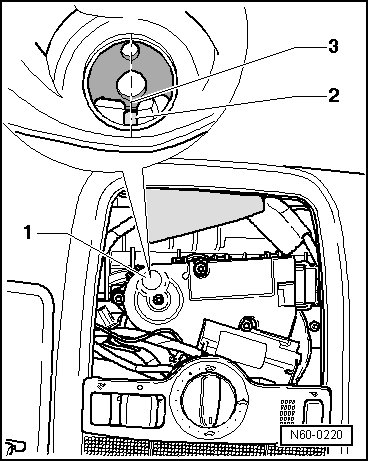

Sunroof Drive Motor, Adjusting Neutral Position
Sunroof with Solar Panel
Sunroof Drive Motor, Adjusting Neutral Position
- Remove the console from headliner.
The drive motor is removed but the electrical wires are connected.
- Switch the ignition on.
- Move automatic rotary knob to "roof closed" position.
- Drive automatically runs to "0" position and switches off.
- Switch off ignition.
- The window is protected by a cover. Pry the cover - 1 - out.

- Colored marking - 2 - and the protruding lug - 3 - must align in the sight window.
- Install the drive motor in this position (neutral position) with the sunroof closed.